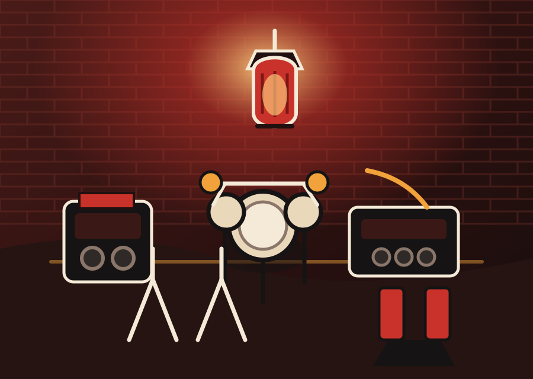

Built for regular practice
Recurring slots, short one-off holds, and simple room guidance help bands and teachers keep a schedule without overbooking guesswork.
Converted brick storefront · close to transit · hourly rooms
Red Lantern Rehearsal Rooms gives working musicians a calm neighborhood place to rehearse without the pressure of a club, school facility, or rental maze.

Recurring slots, short one-off holds, and simple room guidance help bands and teachers keep a schedule without overbooking guesswork.
Rooms are separated for drums, amplified sessions, quiet lessons, and small acoustic work so neighbors and players know what to expect.
Small workshops, teacher-led showcases, and community jam nights keep the space useful without turning it into a performance venue.
Room options
Room A
Full bands · up to 6 players
Best for drums, electric guitars, keys, and louder rehearsals that need a dependable backline.
Room B
Lessons · duos · small groups
A warmer, quieter space for private instructors, student recitals, audition prep, and writing sessions.
Room C
Small ensembles · up to 4 players
A flexible rehearsal room for compact setups, sectionals, horn practice, and recurring weeknight holds.
Booking guidance
Red Lantern is content-first: musicians can ask about fit, availability, and recurring holds before committing. Same-week rooms are handled by request, while teachers and bands can inquire about standing times.
Lesson and solo practice room guidance
Band rooms with basic backline
Recurring teacher blocks and workshop holds
House rules
Amplified sessions are matched to rooms and times. Late sessions wrap cleanly so neighbors and the next players are respected.
Backline is available for rehearsals, not storage. Bring personal instruments, cables, pedals, sticks, and specialty items.
The studio is near transit with limited street parking. Step-free entry details and load-in questions can be confirmed before booking.
Covered drinks are fine in common areas. Extra guests should be noted in advance, especially for lesson showcases or parent visits.
For instructors
Private teachers can request recurring weekday blocks, student-friendly room setups, and occasional showcase time. The Lantern Room works well for piano, voice, strings, winds, guitar, and audition coaching.
Send teaching instrument, student age range, expected weekly hours, and any accessibility needs. Red Lantern will confirm room fit before setting a recurring slot.
Community calendar
Low-pressure jam for bass, drums, keys, and guitar players. House kit provided; sign up in advance.
A small room presentation for families and students, capped for comfort and scheduled before evening rehearsals.
Hands-on session covering signal flow, cable checks, power supplies, and rehearsal-ready setup habits.
Reservations and questions
Share your setup and preferred time. Red Lantern will help match the room, volume level, and available slot before you haul gear across town.